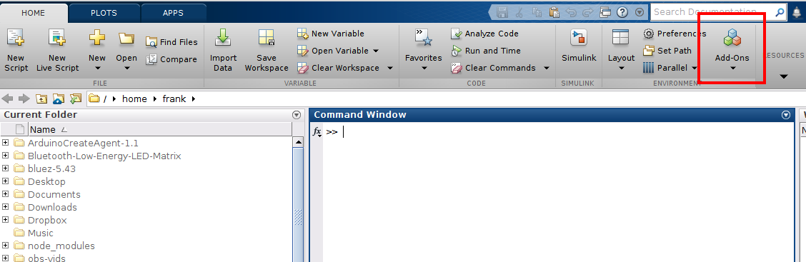
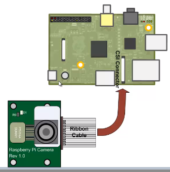
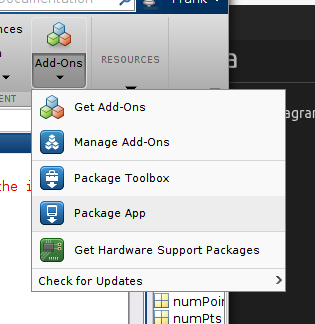

Face Detection Tracking Raspberry Pi
In this exercise you will develop a simple face detection and tracking application using the live video stream captured by your built-in webcam. then, you will try to extend this to the Reapberry Pi and camera
MATLAB provides webcam support through a Hardware Support Package. Download and install the support package via the Add-Ons.

Select Get add-ons and Locate the USB WebCam add-on.
Create objects for detecting faces, tracking points, acquiring and displaying video frames.
% Create the face detector object.
faceDetector = vision.CascadeObjectDetector();
% Clear any active camera connections
clear cam;
% Create the webcam object.
cam = webcam();
% Capture one frame to get its size.
videoFrame = snapshot(cam);
frameSize = size(videoFrame);
% Create the video player object.
videoPlayer = vision.VideoPlayer('Position', [100 100 [frameSize(2), frameSize(1)]+30]);
run=true;
while run
% Get the next frame.
videoFrame = snapshot(cam);
% Display the annotated video frame using the video player object.
step(videoPlayer, videoFrame);
% Check whether the video player window has been closed.
run = isOpen(videoPlayer);
end
% Clean up.
clear cam;
release(videoPlayer);You will now process the video frames to detect faces and insert a bounding box. Matlab uses the Viola Jones algorythm via vision.CascadeObjectDetector object to detect a face in the current frame.
while loop, insert the following code just below videoFrame variable assignment: % get grey scale image of frame
videoFrameGray = rgb2gray(videoFrame);
% Detect bounding boxs for face from grey image.
bbox = faceDetector.step(videoFrameGray);
% if we detect faces, insert a rectange into frame
if ~isempty(bbox)
% insert bounding box around the detected face.
videoFrame = insertShape(videoFrame, 'Rectangle', bbox, 'LineWidth', 3);
endIn this section you will update the code to detect and track features in the detected faces, using the vision.pointTracker. You can use this to track the face and not have to perform full face detection on every frame. As you track the points, some of them will be lost because of occlusion/noise. If the number of points being tracked falls below a threshold (in this case 10), that means that the face is no longer being tracked. The code will then switch back to the detection to try to re-acquire the face.
pointTracker object numPoints variable by adding the following code at just under the faceDetector object declaration:% Create the point tracker object.
pointTracker = vision.PointTracker('MaxBidirectionalError', 2);
numPts=0;if ~isempty(bbox) condition with the following code: if numPts < 10
% Detect bounding boxs for face from grey image.
bbox = faceDetector.step(videoFrameGray);
if ~isempty(bbox)
% Find corner points inside the detected region.
points = detectMinEigenFeatures(videoFrameGray, 'ROI', bbox(1, :));
% Re-initialize the point tracker.
xyPoints = points.Location;
numPts = size(xyPoints,1);
release(pointTracker);
initialize(pointTracker, xyPoints, videoFrameGray);
% Save a copy of the points.
oldPoints = xyPoints;
% Convert the rectangle represented as [x, y, w, h] into an
% M-by-2 matrix of [x,y] coordinates of the four corners. This
% is needed to be able to transform the bounding box to display
% the orientation of the face.
bboxPoints = bbox2points(bbox(1, :));
% Convert the box corners into the [x1 y1 x2 y2 x3 y3 x4 y4]
% format required by insertShape.
bboxPolygon = reshape(bboxPoints', 1, []);
% Display a bounding box around the detected face.
videoFrame = insertShape(videoFrame, 'Polygon', bboxPolygon, 'LineWidth', 3);
% Display detected corners.
videoFrame = insertMarker(videoFrame, xyPoints, '+', 'Color', 'white');
end
else
% Tracking mode.
[xyPoints, isFound] = step(pointTracker, videoFrameGray);
visiblePoints = xyPoints(isFound, :);
oldInliers = oldPoints(isFound, :);
numPts = size(visiblePoints, 1);
if numPts >= 10
% Estimate the geometric transformation between the old points
% and the new points.
[xform, oldInliers, visiblePoints] = estimateGeometricTransform(...
oldInliers, visiblePoints, 'similarity', 'MaxDistance', 4);
% Apply the transformation to the bounding box.
bboxPoints = transformPointsForward(xform, bboxPoints);
% Convert the box corners into the [x1 y1 x2 y2 x3 y3 x4 y4]
% format required by insertShape.
bboxPolygon = reshape(bboxPoints', 1, []);
% Display a bounding box around the face being tracked.
videoFrame = insertShape(videoFrame, 'Polygon', bboxPolygon, 'LineWidth', 3);
% Display tracked points.
videoFrame = insertMarker(videoFrame, visiblePoints, '+', 'Color', 'white');
% Reset the points.
oldPoints = visiblePoints;
setPoints(pointTracker, oldPoints);
end
end

Find the "Raspberry Pi" Package and download/install.
Create a new Mallab scroipt called piCam.m and enter the following code:
%% integrate the Rpi
rpi=raspi();
rcam=cameraboard(rpi,`Resolution`,`640x480`);
%% display one frame
snap = snapshot(rcam)
imshow(snap)
hold onRun the code and- you should see the image from the pi camera appear.
Modify the code to do face detection. Refer to the previous code for guidance. You should use the cascade object detector to locate the bounding box of any detected face...